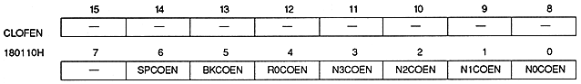
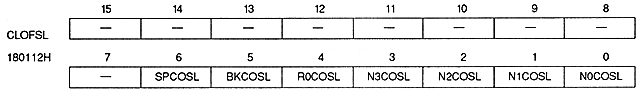

Color offset enable bit
N0COEN | 180110H | bit 0 | NBG0 (or RBG1) |
N1COEN | 180110H | bit 1 | NBG1 (or EXBG) |
N2COEN | 180110H | bit 2 | for NBG2 |
N3COEN | 180110H | bit 3 | for NBG3 |
R0COEN | 180110H | bit 4 | for RBG0 |
BKCOEN | 180110H | bit 5 | BACK use |
SPCOEN | 180110H | bit 6 | for sprites |
xxCOEN | Processing |
0 | Do not use color offset function |
1 | Use color offset function |

Color offset select bit